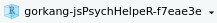

# Make sure you have {usethis} installed
if (!require('usethis')) install.packages('usethis'); library('usethis')
# Download the last version:
usethis::use_course(url = "gorkang/jsPsychMaker", destdir = "~/Downloads/")2 Quick Guide
2.1 jsPsychMaker: Create an experimental protocol
See the jsPsychMaker chapter for more detailed instructions.
Outline
Download jsPsychMaker
Go to the folder
canonical_protocolsand edit theconfig.jsfile to select the tasks you needOpen
index.htmlin your browser
1) Download jsPsychMaker
Open RStudio and run the following two lines in the console. This will download the last stable jsPsychMaker version v0.2.0. When you finish, a new RStudio project named jsPsychMaker-0.0.2 will open.
2) Edit configuration
You will need to edit the config.js file on the canonical_protocols. See the experiment configuration section for more details.

You can do one of the following:
Go to folder
canonical_protocolsand editconfig.js.Use the jsPsychMaker_config Shiny APP and copy the generated config.js file in the
canonical_protocolsfolder.
3) Run experiment
The experiment is ready to run on your computer. Open index.html in Google Chrome or your favorite (and up to date) browser.
2.2 jsPsychMonkeys: Simulate participants
See the jsPsychMonkeys chapter for more detailed instructions.
jsPsychMonkeys uses Selenium inside a Docker container to guarantee each session is a clean session. On Linux it’s use and configuration is trivial, but on Windows it can be trickier.
Outline
Download jsPsychMonkeys
Setup
Run Monkeys
1) Download jsPsychMonkeys
if (!require('usethis')) install.packages('usethis'); library('usethis')
usethis::use_course(url = "gorkang/jsPsychMonkeys", destdir = "~/Downloads/")2) Setup
Run setup: source("setup.R"). This will install the packages needed.
Ubuntu
You may need to install some system libraries first:
sudo apt install libssl-dev libcurl4-openssl-dev libxml2-dev docker
3) Run Monkeys
Open run.R and follow the instructions. Mainly:
Open
_targets.Rfile:rstudioapi::navigateToFile("_targets.R")Edit
parameters_monkeys_minimal. For example, launch participants 1 to 5 to the 999 protocol locally:parameters_monkeys_minimal = list(uid = 1:5, local_folder_tasks = "Downloads/999")
Run Monkeys!:
targets::tar_make()
2.3 jsPsychHelpeR: Prepare data
See the jsPsychHelpeR chapter for more detailed instructions.
Outline
Download jsPsychHelpeR
Run setup
Run data preparation
1) Download jsPsychHelpeR
- Run the following two lines in a RStudio console. A new RStudio session will appear. On the top right corner of your RStudio you should see something similar to:

# Make sure you have {usethis} installed
if (!require('usethis')) install.packages('usethis'); library('usethis')
# Download jsPsychHelpeR version to the Downloads folder
usethis::use_course(url = "gorkang/jsPsychHelpeR", destdir = "~/Downloads/")2) Run setup
Open the file run.R and run initial setup:

# Load functions
invisible(lapply(list.files("./R", full.names = TRUE, pattern = ".R$"), source))
# Run initial setup [REMEMBER to replace `999` with your project number]
run_initial_setup(pid = 999)run_initial_setup() will:
- Delete old files
- Install dependencies
- Create necessary folders
- Download results files for the project (you will need the FTP credentials)
- Download and zip a copy of the full protocol without the data (you will need the FTP credentials)
- Create a
_targets.Rfile for your project
IMPORTANT: You may need to manually copy the results files to the folder data/PROJECT ID
3) Run data preparation
# Run data preparation
targets::tar_make()If you are curious, running targets::tar_visnetwork(targets_only = TRUE) will show the whole data preparation targets tree.